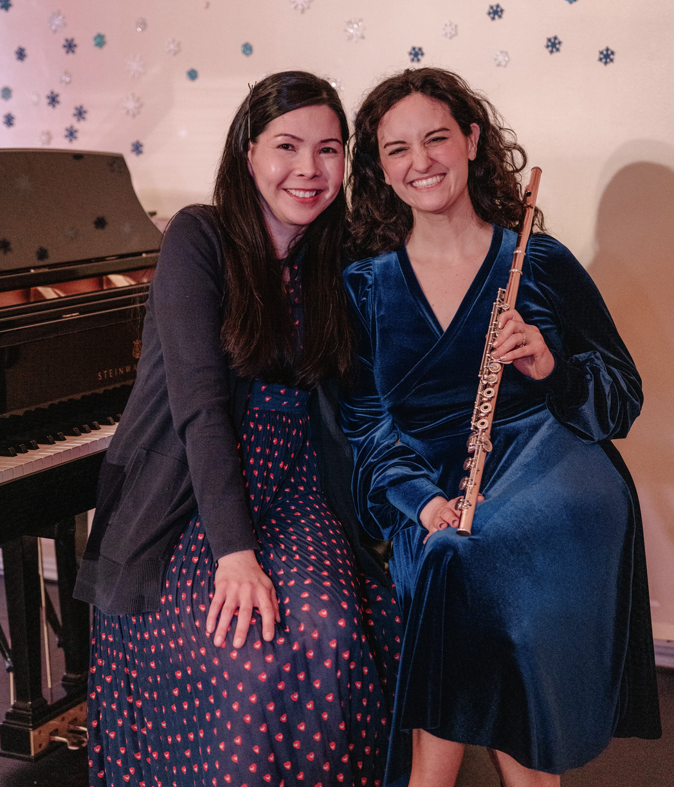

About
Through intriguing programming and storytelling, The Delphinium Duo share the beauty of classical music, making it accessible to a modern-day audience.
Through intriguing programming and storytelling, The Delphinium Duo share the beauty of classical music, making it accessible to a modern-day audience.
Sunday, September 28, 2025 at 3pm @ Chelmsford Center for the Arts.
Check back soon for tickets and more information!
Sunday, March 23, 2025 at 3:00pm @ the Chelmsford Center for the Arts
Stories of New Beginnings: Celebrating the Spring Equinox
Jessica Smith is an active flutist and educator residing in MetroWest Boston. Since graduating with her master’s degree in music performance from Ithaca College in 2014, Jessica maintains a full teaching studio and performs regularly with Multiverse Concert Series and in local chamber groups, including Delphinium Duo.
www.jessicasmithflute.com
Michelle Madasamy performed throughout the Chicago and NY metro areas as a soloist and collaborative pianist prior to settling in MetroWest Boston. Michelle is a proud U.S. Navy veteran, and former keyboardist with the Navy Band. After obtaining degrees in piano and music education, she continued her artistic studies at the Mannes School of Music.
www.michellemadasamy.com
We'd love to hear from you!